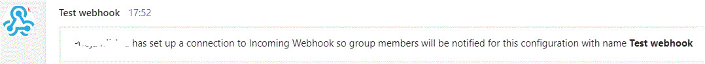

How-to: Integrate MS Teams
Integrate Microsoft Teams with IBM DevOps Deploy (Deploy) to post notifications automatically to your Teams channel whenever a specific deployment event happens.
About this task
By using the Incoming Webhook connector in Teams, you can integrate Deploy services so that you get notified of an event through the Teams channels.
In this example, you'll learn about the requirements and procedures to integrate Teams with Deploy. To integrating Teams with Deploy, follow the steps provided in this section.Step 1: Obtain the webhook URL from your Teams channel
Procedure
Results

Step 2: Format the message card
A message card is defined in a JSON format that includes the message in text, links, and image, if required. For IBM DevOps Deploy (Deploy), you can create a message card that refers to the process name, status, and a link to the process deployment page. The message card format is used as body in the webhook template.
About this task
- Application Deployment Failure JSON body
- Application Deployment Success JSON body
- Application Process Request Started JSON body
- Approval Completed JSON body
- Approval Failed JSON body
- External Approval Completed JSON body
- External Approval Failed JSON body
- Generic Process Completed JSON body
- Generic Process Request Started JSON body
- Scheduled Process Not Started JSON body
Step 3: Create a webhook template
Create a webhook template for an event so that when the event happens a notification is triggered on Teams.
Procedure
- Select .
- Provide a name and description for the template. For this example, give the name as Process failure notification.
- Click on Body area and paste the example code from the step 2.
- Choose the event type Process Failure from the Type field.
- Submit your changes.
Results
Step 4: Add webhook template to an application
You can add a webhook template to applications, generic processes, and external approval processes. For this example, you add the template to an application.
Before you begin
Procedure
Results
| Webhook-Integration-Test | 6/13 6:53 PM |
| An approval failed for the App application on the Env environment | |
| An application process was rejected during its approval process | |
| Application: App Environment: Env Requested by: admin Scheduled for: Sun Jun 13 18:52:31 IST 2021 Description: ${request.Description} | |
| Click View Details for more information. | |